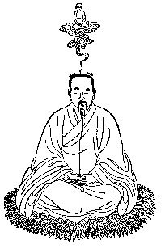
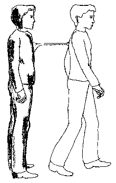
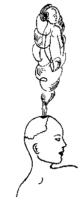
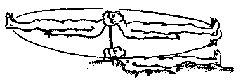
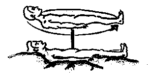
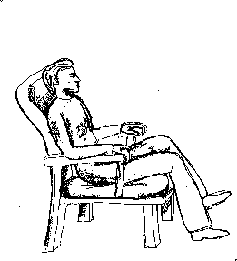
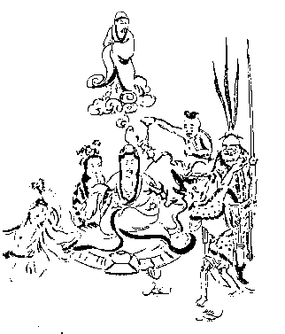
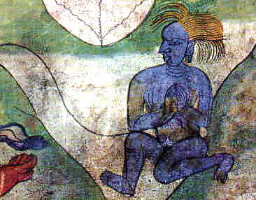

The Silver Cord
(Observations and
Traditions)
© copyright Alfred Ballabene, Vienna (Austria), 1997
Nomenclature 
The most usual terms are: silver cord, silver chord, astral cord.
In literature and in the news the terms "silver cord" and "astral cord" are used without making any difference. I have split the two terms into two different meanings, assigning silver-cord as a term for the etheric cord phenomenon and astral cord as a term for the astral cord phenomenon. Below experiences and speculations are presented, underlining the use of two different terms.
Descriptions and Observations of the Silver Cord
Description of the silver cord in the literature
Robert Crookall: "The Techniques of Astral
Projection", The Aquarian Press, Wellingborough, GB, 1981, page 49:
"The silver cord is not a physical feature. lt was likened by
Bertrand to "a kind of elastic string", by Muldoon to "an elasticlike
cable", by Turvey to "a spider's cord" which was "silver" and which "extends
and contracts as an elastic cord", by Gerhardi to ,,a coil of light", "a
lighted cord", "a thin ray of light" and ,,the silver cord" (which he
observed was behind his Astral Body as he moved forward). Home likened his
to ,,a silvery-like light", Huntley described "a feeble thread", Miss
,,P.L." ,,a cord", Mrs Larsen "a current of mysterious influence", Sigrid
Kaeyer "a connexion".
Rebell described "a thin luminous ribbon", Mrs
Boorman "a stream of light", Wirt "a silver cord or chain", Mrs. Gilbert "a
cloudy-looking cord", the Tibetans "a strand or cord", Mrs Cripps ,,a shaft
of sunlight"', Stuart-Young ,,a thread", the Anon. lady "a beam of light",
Mrs "T.D." "a smoky string", Mrs "Prothero" "a slender, slightly luminous
cord", Dr Simons "an elastic force", etc.
These people who independently
gave such similar descriptions of what they saw include Britons, Americans,
Frenchmen, Tibetans, Latvians, etc., clergymen, doctors, authors, musicians,
etc. Many of them had never heard of the Astral Body or of astral
projection."
Own experiences of the silver cord
Bal.: "Several years ago I once experienced the silver cord when "stepping-out-in-trance". Out of the body, at a distance of about 1m or 1,5m I turned around, face to the physical body. As usual in near-body distance I was without visual perception and in absolute darkness. Feeling a touch on my breast I reached out for it and felt something with smooth surface formed like a cone, diameter at the basis (breast) ca. 15 - 20cm, getting smaller to a diameter of about 5cm at a body-distance of about 30cm. At this diameter (5cm) it transformed to a cord, leading in direction of the physical body. In all other OBE's of the type of "stepping-out-in-trance" I paid no attention to the silver cord, but at a certain distance (ca. 50m) I felt a pull. Then I was stopped as if tied and fixed at my backside. Instantly I was retracted to the physical body. This happened very often and reduced my expeditions to a short duration, frustrating me."
Descriptions, seen by mediumistic persons as observers
S.Muldoon, H.Carrington, "The Phenomena of Astral
Projection", p. 71:
"THE HOUT CASE NO. 2, in which the doctor tells
of seeing the exteriorized etheric bodies of three different persons, while
the latter were undergoing surgical operations.." ,,In each case I was able
to see, at least part of the time, the astral cord that united these spirit
bodies with their physical counterparts. This was represented to me as a
silvery shaft of light which wound around through the room in much the same
way as a curl of smoke will drift indifferently in still atmosphere. When
the magnetic force would draw the spirit close to the physical body, this
cord was more apparent, as though more concentrated. At other times this
force was indistinguishable to me. ."
Positions of Silver Cord Connections
|
 Bal.: "While I have been moving away from the
physical body, the silver cord has been connected to the backside of the
subtle body; turning around, face to the physical body, the basis of the
silver-cord has been sensed at the frontside. It seems that the root of
the silver cord always is directed towards the physical body. The most
frequently described locations of the root of the cord are back and
breast respectively and back of the head and forehead respectively. The
position is affected by the focus of consciousness being either body
centered or mental centered. |
I suppose, that the silver cord can be connected with any place of the body, though some few places are prefered:
|
 The heavenly body leaving through the fontanella (ind./buddhist technique of Pho-Wa)Picture from S. Muldoon and H. Carrington:The Phenomena of Astral Projection S.Weiser Verl., New York, 1974 (German edition)
|
|
 Rotation with the silver cord as axis. Observed by Ballabene, 29.10.1980 |
|
 In the same experience later on, the silver cord shifted from the head to the region of the stomach. The subtle body still was rotating with the silver cord as axis. |
Length and Thickness of the Silver Cord
Concerning the length of the silver cord very different observations
are reported. There seem to be great individual variabilities. Diameter and
length are correlated.
S.J. Muldoon (3), p.29 writes:
The "cord" is
described as relatively short and thick when the "double" is within a few
feet of the body and getting thinnner and thinner as they separate, until it
is like a spider's web.
Pulsations and vibrations of the cord
In this respect I have no personal experiences. In literature (see Crookall) pulsations and vibrations of the silver cord are mentioned. Mostly these pulsations are interpreted as vitality transport and life-impulses towards physical body for breathing and heart beat. I prefer another interpretation: Pulsations and vibrations are very common experiences before starting body separation. Why not should such pulsations extend and spread over the silver cord. I think there is no need to attach importance to this detail.
Function of the silver cord (theoretical considerations)
The etheric "substance" penetrating the physical body has been experienced (by occultists) as connected to vitality. A lack of etheric substance in human body is postulated to cause weakness or sickness. On the other hand an accumulation, induced by a number of exercises in Yoga, Taoism, Kung Fu etc., seems to lead to mediumistic and paraphysical abilities. While OBE-ing (etheric OBE) a part of the vital body separates, forming a fog-like double, the etheric body. To prevent a permanent loss of etheric substance, bound to the double, there seems to be a "saving" mechanism, in which the silver cord takes part, connecting the dissociated ektoplasm to its source in the physical body. Thus a separation of etheric matter with no return is prevented.
The forming process of the silver cord

Threads observed when separating:
In my OBE´s performed by the technique "stepping out in trance" my subtle body seemed to be tied by many elastic cords to the physical body as if being attached by gluelike stringy material. By rocking I enlarged my swinging motions, and at last I was able to rupture these cords (at least that was what I sensed). It may be that only part of the strings were torn and another part, situated in a somehow favoured region and more densely arranged, were assembled to a single, stronger "string", the so called "cord" I am dealing with. In this way statements of some authors may be interpreted, in which the base of the silver cord is described to be of rootlike character or to be composed of many cords.
Statements of authors, considering the silver cord as
composed of many threads:
Monroe, Robert: "Journeys out of the body".
German Ed. 1972, p.164.
Yram: "Practical Astral Projection"; New York: Samuel Weiser, Inc.; 3rd Impression, 1977, p.75, paperback, writes:
"Where the cord joins the double it consists of thousands of very fine, elastic threads, which seem to suck the double into them."
Speculations and Doubts concerning an Astral Cord
The Astral Cord interpreted in Theosoph´s tradition:
The Theosophs initiated modern esoteric insights and their theories are accepted all over the esoteric groups. Regarding this valuable research critisicsm seems retentious but nevertheless may be useful, if we don't want to stick to dogmas. At the end of the 19th century the most important impulse for civilization was the invention of a new way to send informations in "no time" by means of electrical signals conducted in cables. It was logic to refer to the new development when creating a modern esoteric science, specially since cable-like features were found, connecting subtle body to physical body. The social-religious paradigm of this era was hierarchical. In the same way as god was controlling world, the overself was controlling the physical body, passing on its orders to the latter by means of the information cable "astral cord". Control was thought to be complete, even in details like breathing and heart-beat. Technique was not as far developed as to allow ideas like autoorganization and selfregulation.
A second and additional idea was the association of the cord with the umbilical cord, the mother aspect being associated to the physical body, the embryo to the subtle body. Birth was linked to death: In birth the umbilical cord is cut and the newborn enters daylight as individual; in physical death the silver cord breaks and the soul is set free. Resulting from this philosophy a break of the silver- (astral-) cord was thought to cause death.
Personal observations:
I have never seen, felt or touched a cord in astral plane.
Experiences:
Stepping out in false awakening: For several times I turned in direction to the physical body to check the existence of a cord by touch and sight and had no positive cord observations. In all these experiences there were no mediumistic signs, no threads registered and stepping out was easy and without problems.
Spontaneous astral travellings:
I very often turned around in astral travelling, mostly to gain better orientation. I have never seen a cord and I have never felt a direction in which the physical body could have been. I rather felt to be in another plane. In this case the cord would have had to cross planes. I doubt if this is principally possible for any matter, even if it is a subtle matter considering that every plane has its own kind of "matter" and organization.
Conclusion
> * can you expand on the theory that if the strand is broken the owner dies?
It's not at all probably that the strand could break - it's like a gas and you can not break or cut a gas. But should something like that occur, then the person will be weakened and perhaps become sick, but it would not be as harmful that the person would die (this opinion of mine is in contradiction to the opinion of the Theosophic teaching.)
> * What form would the strand take in it's connection with the owner (hanging from it, sat on top indian-rope-trick style etc)
It mostly is observed as hanging down, of silvery shine or nearly transparent. If not hanging down it always takes the shortest way to the physical body.
> * and anything else that you feel may be of use to making this as accurate as possible.
In all observations and letters the silver cord (the strand) only is observed in excursions nearby the physical body, thus an etheric phenomenon and no astral subject.
In contrary to these wide spread observations Theosophs are of opinion that the silver cord does exist as well on astral plane, as a cable for transport of mental/emotion information and for life vitality. The basis to that believe (that the cord exists as well on astral plane) is more because of theoretic considerations than as a result of observation. The Theosophs are the founders of the present basis of occult/transcendental understanding.
> * also does the strand apply to those merely sleeping or only to those projecting?
It's an observation of those who leave the physical body by will by means of stepping out or floating out or rolling out. The silver cord is not observed in astral projections (which mostly are spontaneous or performed by visual projections) - which are more of dreamlike character than the above mentioned "leaving the physical body" experiences.
Reports in myths and traditions, which can be interpretated as those of the silver cord
Bible
Taoism
|
 picture of unknown originTaoist practizing the PHO-WA technique. |
|
From: "Geheimnis der Goldenen
Blüte", by
Richard Wilhelm, with commentation of C.G. Jung, page 129 (german
edition). text: meditation 3. phase: separation of the spiritual body from the physical body, as an independeant body existance. |
Hinduism
|
 From "L'art de l'himalaya" of Madanjeet Singh, Weber Verlag 1968 (UNESCO) (german edition). The soul is carried away by Yama (the god of death). |
Schamanism
Germans, Grecks
Source: http://mailbox.univie.ac.at/Alfred.Ballabene/english/cord.htm